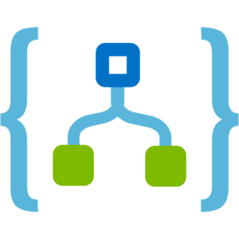
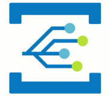
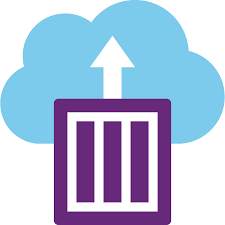

Going serverless with Microsoft Azure
April 4, 2019
Estimated reading time: 20 minutesThis post was published some time ago. The world of technology is rapidly evolving, and in some extreme cases even posts just one month old will be out-dated. So there is a chance that some of the concepts, technology or pricing in this post is no longer applicable.
This article have been posted on my employers official blog at an earlier time. They are the same. My post on my employers website can be found here: Webstep - Going serverless with Microsoft Azure
The term “serverless” is something that we hear more and more about. It is mentioned often as the next big thing in cloud computing. There might be a small confusion on to what serverless really is, and it does not help that the cloud providers often “serverless-wash” their existing services. But serverless might not be some ground-breaking new concept. But rather an evolution of services provided by cloud providers for some time. Let’s have a look at what serverless is and what Microsoft Azure can provide in terms of serverless services.What is serverless?
“FaaS”, or Functions-as-a-Service, is a common serverless offer from cloud providers where you as a developer supply the code in form of a single function that should be executed when certain conditions are met. Those conditions could be a invocation of the functions public HTTP endpoint, a message on a bus or a timer to mention some.
The term “serverless” can be, as many other buzzword-terms often are, an ambiguous one. It is not true that there are no servers as the term might imply. There is of course a server somewhere running your application. The term “serverless” rather refers to the case that you as a developer (or DevOps) do not need to think about the server(s) that are running your application(s). There is no need to think about keeping a server updated with the latest patches, scaling or anything else in relation to the infrastructure and hosting of the infrastructure.
It is a term that is often associated to Function-as-a-Service (“FaaS”) services. FaaS is just on form of serverless services that cloud providers offers. (In this article we will go into details about Microsoft Azure’s FaaS offering – Azure Functions.) Serverless also applies to services as data storage, messaging, compute and other service offerings where you do not need to manage own infrastructure. This responsibility is outsourced to a cloud provider that offers serverless services, like Microsoft Azure, Amazon Web Services or Google Cloud.
Figure 1: Serverless sits on top of abstracted infrastructure.
A cloud service can be thought of as serverless when you as a developer supply the application. And your provider takes care of the rest in regards of infrastructure needs like scaling, networking or security. This is sometimes referred to as: “BaaS” – Backend-as-a-Service. A common definition is that a service is truly serverless when the following conditions are met:
- Abstraction of servers
- Scales automatically and instantly
- Only billed for actual usage
As illustrated in Figure 1: In addition to the abstraction of servers, you only pay for what you use. (Micro billing) The service is not billed on an hour / minute basis even if you do not use it during that hour or minute. It scales automatically to the need of your application. So, if you have unevenly usage of your application the infrastructure beneath scales up and down accordingly.
Figure 2: Serverless - an evolution of the cloud
Serverless can be regarded as an evolution of the cloud. The first cloud services were Infrastructure-as-a-Service, (IaaS) where you could provision infrastructure serices virtual machines, load balancers, networks, storage and other on the cloud provider. You still had to maintain your servers with latest patches to the operating system and set up internal networking and scaling yourself.
IaaS – Infrastructure-as-a-Service is when a cloud provider hosts infrastructure component like servers, storage and networking and enables the user to provision the services on demand.
PaaS – Platform-as-a-Service is services where the underlying infrastructure is abstracted away and the cloud provider supplies the customer with a framework they can use to develop services on top of.
Cloud providers then started offering Platform-as-a-Service (PaaS) services where the servers were abstracted away, but you still had to scale the service yourself and you payed by the hour/minute/second even if you did not use the service. To help with these manual tasks many created scripts themselves that: Automatically scaled a service up or down based load and provisioned / deprovisioned services when needed.
With serverless the cloud provider has removed the need to automate the scaling and provisioning of underlying infrastructure. The provider now does this for you. And you only pay for the seconds that the serverless service is in use.
The Microsoft Azure serverless platform
Microsoft Azure have many serverless services that they provide. They are grouped into two categories: “Serverless execution environments” and “Fully managed services”. The serverless execution environments are services that are used to run your code. Fully managed services are services that can easily be integrated with your code to create powerful and scalable serverless applications.
Serverless execution environments are services like Azure Functions, Azure Service Fabric Mesh and Azure Container Instances. Azure Functions are the Azure FaaS service and Azure Container Instances (ACI) are a serverless solution where you can run your containers on a cluster. All though ACI does not at the time of writing fulfill one of the 3 criteria given above, it is still counted as one of Microsoft Azure serverless offerings. Azure Service Fabric Mesh are serverless solutions where you can run your Service Fabric applications and containers (Windows and Linux) on an Azure Service Fabric cluster.
Figure 3: Microsoft Azure serverless services.
The fully managed services are services like Cosmos DB, Azure Service Bus, Logic Apps and Event Grid to mention some. They are services that provides serverless storage, messaging, orchestration and events to your serverless applications. Both the fully managed services and the serverless execution environments are often only billed by usage and is automatically scaled to fit your needs.
Both the serverless execution environments and the fully managed services are seamlessly integrated with development tools like Visual Studio and Azure DevOps for easy development and deployment. With this basic overview of the Azure serverless platform lets move on to some more details about some of the services.
Azure Functions
Azure Functions are the Functions-as-a-Service offering from Microsoft Azure. As with other FaaS solutions it is designed to execute small short-lived functions. It has a default maximum lifetime of 5 minutes and can be configured to be as small as 1 second and at most 10 minutes. If the function execution time exceeds the configured (or default) lifetime it will be un-gracefully killed. An Azure Function should do one thing and do that thing good. You can combine many functions together using an orchestrator like Logic Apps or create a durable function. (A durable function is a special stateful Azure Function)
Use cases
Some Azure Functions use cases could be:
- Processing event streams in real time
- Processing files
- Web APIs and mobile backends
- Automate scaling / (de)provisioning of other Azure services
- A glue between different Azure services
- A service processing events or messages on a service bus
Triggers and Bindings
A Trigger, as the name might imply, is an event that start the Azure Function. There are several triggers to choose from. Some of the most common ones might be: Webhook, Service Bus, Event Grid or Cosmos DB.
Bindings are a construct inside of an Azure Function that enables you to communicate with other services (Azure or external) without any need to use an SDK or library. This makes for a very small and easy implementation when you as a developer want to send a SMS, store data on a Storage Blob or send a message on Azure Service Bus. Bindings can work as inputs or outputs to a function, but only a subset of all the available bindings can be used as inputs.
The bindings (both input and output) are passed to the Azure Function as a parameter when the function is executed. The trigger is also passed to the function as a parameter. The direction of the binding is configured ether in the Azure Portal UI for the Function or in the configuration file deployed with you function code.
Figure 4: Triggers and bindings options for Azure Functions
There are many different Triggers and Binding to choose from. Over is a figure that illustrates all the current available triggers and bindings as of writing. (The SignalR binding are in public preview and not generally available.)
Durable Functions
A recent addition to Azure Functions is the Durable Functions. A Durable Function is an extension of the normal Azure Functions. The extension is built upon the Durable Task Framework. This is a framework for writing long running persistent workflows.
Durable Functions maintains the execution state by using the event sourcing pattern on top of Azure Storage Account to create a append-only store. This enables the function to never loose state even if the process is recycled or the VM rebooted.
Figure 5: The tree durable function types in Azure Functions
There are three types of Durable Functions: Client, Orchestrator and Activity. And one of the main use cases of Durable Functions are as an orchestrator of other Durable Functions.
The client functions are the entry points that are triggered and creates new instances of an orchestration function. The orchestration functions execute activity functions or can also execute new orchestration functions. The activity functions are there the tasks and actions are performed and can return values back to the orchestrator functions for persistence.
Azure Functions Runtime
Azure Functions run on the Azure Function Runtime. There are currently two versions of the Azure Functions Runtime: 1.x and 2.x. The 1.x runtime only supports development and hosting in the Azure portal or on Windows computers. But the 2.x runtime supports developing running on developing on Linux, Mac OSX and Windows. One of the biggest difference between 1.x and 2.x is that 1.x uses .NET Framework and 2.x uses .NET Core.
There are also some differences in what languages that are supported. All languages that are considered “experimental” in 1.x are not supported in 2.x. There are also other minor differences and they can be found in more details here on the Azure Functions documentation.
Programming languages supported
Many programming languages can be used with Azure Functions. There are some differences in what languages are supported based upon the runtime used. Beneath is a list of the supported programming languages at the time of writing:
| Language | 1.x | 2.x | Notes |
|---|---|---|---|
| C# | Yes | Yes | .NET Framework 4.7 is used in 1.x and .NET Core 2 in 2.x |
| Javascript | Yes | Yes | Node 6 support in 1.x and Node 8 & 10 in 2.x |
| F# | Yes | Yes | .NET Framework 4.7 is used in 1.x and .NET Core 2 in 2.x |
| Java | Yes | Java 8 | |
| Python | Exp. | Yes | Pyblic preview - Python 3.6 |
| Typescript | Exp. | Supported trough transpiling to Javascript | |
| PHP | Exp. | ||
| Batch | Exp. | ||
| Bash | Exp. | ||
| Powershell | Exp. |
Languages that are marked Exp. Are experimental languages. These experimental languages only run on 1.x and does not support all bindings and scale very well.
Running an Azure Function
One of the many great things about Azure Functions is its versatility on where you can run your function code. You can run an Azure Function on many locations. From Microsoft Azure to on-premises using the Azure Functions Runtime or Azure Stack. Some of the latest ways of running a function is in a container. This enables a function to be run virtually anywhere you can run a container. Note that at the time of writing the Azure Functions Runtime, (and by effect Containers) and Azure Function Modules on IoT Edge are in public preview and not generally available.
Figure 6: Where you can run Azure Functions today
Pricing models
For some pricing may be the boring part when describing a cloud service. But for Azure Functions pricing can be one of its stronger selling points. When running Azure Functions on Azure you can choose between a fixed price by using an App Service Plan or a Consumption plan. The App Service plan offer predictable prices, but you lose most of the advantages of Azure Functions as a serverless service since your resources are now limited and it does not scale automatically. But you do gain the possibility to let your function access your VNETs.
VNET is a type of Infrastructure-as-a-Service service offered by Microsoft Azure. It enables you to create a virtual network to connect your virtual appliances, virtual machines and other IaaS services offered by Microsoft Azure.
The recommended pricing model to choose if you can, is the “consumption” pricing model. Using this pricing model, you only pay for the execution time of your function in addition to a price per execution. The price for execution time is measured in GB-s. This is amount of gigabyte RAM per second used.
Included in the consumption pricing model is a free tier of 400 000 GB-s and 1 million executions at the time of writing. For an overview of the latest prices for Azure Functions you can visit the Microsoft Azure Functions pricing page here.
You can also run Azure Functions without any additional charge by running them on your IoT Edge device or using the runtime with or without a container on your own infrastructure.
Azure Logic Apps
Azure Logic Apps are an Azure service that is used for orchestration and automation of tasks. It can integrate with approx. 200 different services, both external and Microsoft Azure, at the time of writing. It is a visual tool that uses a visual designer in the Azure Portal UI or Visual Studio and there is a many quick start templates to choose from in the logic apps template gallery. Every workflow is saved as a json file, so if you should find the need to have a look under the hood you can.
It can be a familiar service to use for someone familiar to IFTTT (If-This-Then-That), Nintex or similar tools to create a workflow. No code is required to create an Azure Logic Apps workflow.
Figure 7: Screenshot of one of the starter templates from the Azure Portal illustrating the IFTTT-like user interface
Use cases
There are a many use cases for Azure Logic Apps because of its versatility. You can use it to orchestrate Azure Functions, act as a simple web service (using the request and response connector) or to help you connect legacy on-premise systems with newer systems in the cloud to help you move toward digitalization.
Some of the more common use cases would be:
- Orchestration of Azure Functions
- Automating business processes
- Integrating older legacy systems with the cloud
- Validate or transform data
- Route messages on a service bus
Using Azure Logic Apps, you can create workflows containing simple logic using conditional statements, branches and loops. But if you need more advanced logic in your workflow then you can combine Azure Logic Apps with Azure Functions to enhance its capabilities even more.
Connectors
One of the core functionalities that enables you to create workflows are connectors. A connector is way for Azure Logic Apps to connect to services and gain quick access to events, data or actions provided by the service.
At the time of writing there are around 200 connectors to choose from and the list are steadily growing. If there are no pre-built connector from Microsoft or other 3rd parties already in place, then you can create your own custom connector.
Triggers and Actions
Many connectors have functionality that enables them to be used as a trigger to start a Azure Logic Apps workflow. These connectors send an event when certain conditions are met and a new instance of the Azure Logic App workflow that listens to that trigger are instantiated.
There are mainly three different types of triggers available. This is:
- Polling trigger
- Push trigger
- Recurrence trigger
The polling trigger polls a service at given intervals and triggers if certain pre-defined conditions are met. The push trigger listens for events and triggers if an event is received. The recurrence trigger is a timer that triggers at a recurrent user-defined interval.
Another connector feature is actions. Actions are tasks that can be executed on a service using a connector. Actions are tasks that are defined as steps and automated by your Azure Logic Apps. It is worth noting that not all actions are connector actions. There are integrated actions like conditional actions and data manipulation actions that are not a connector to an external service.
Pricing models
Two pricing models are used by Azure Logic Apps. The main pricing model are the consumption model where you pay for the number of actions and connectors that are executed in your workflows. The connectors are categorized into standard and enterprise where the enterprise connector execution cost is approx. 8x more than the price for the standard connector execution. At the time of writing the price for a standard connector execution is NOK 0.001015 and the price for a action is NOK 0.000203. Note that these quotes are subject to change.
The other pricing model is the fixed pricing where you pay for a dedicated environment. This enables your Azure Logic Apps to connect to services located on VNETs and/or Virtual Machines connected to those VNETs. This pricing model is at the time of writing in public preview and are discounted 50%. This is subject to change when it becomes generally available. Your dedicated environment are billed per hour it stays on and has a limit to 1k actions/connectors executions per minute. If you want to increase this limit you pay can extend it by ordering more units.
Azure Event Grid
Azure Event Grid is a event distribution service designed for Microsoft Azure. Azure Event Grid is connected to a growing list of services on Microsoft Azure and enables you to react to events in near-real time fashion. Azure Event Grid also supports custom events, so it is not just for use with events from Microsoft Azure. You can push events using your favorite HTTP client or library.
Azure Event Grid uses the pub-sub (publish-subscribe) model. Event sources (Azure services or your own custom) publishes events to a topic that Azure Event Grid then pushes to the subscribers of the topic. This enables you as a developer to create event driven service architectures with decoupled services with ease.
Using the “push-push” method distinguishes Azure Event Grid from other Microsoft Azure evening and messaging services. Both Azure Storage Queues and Azure Service Bus uses the “push-pull” method there the subscribers of a topic must regularly poll to see of the topic has any new events or messages. Using “push-push” is what enables Azure Event Grid to deliver near real time events across services.
Figure 8: How Event Sources, Topics, Event Subscriptions and Event Handler are connected.
Event Sources and Event Handlers
In Azure Event Grid the concept of event sources and event handlers are used for the publishers and the subscribers of events. An event source publishes an event to a topic, and an event handler subscribes to an event on a topic. A topic can be a built-in topic for an Event Grid enabled Azure service or a custom topic defined by the user where custom events can be pushed by HTTP.
At the time of writing there are 10 Azure services (+ custom) that support sending events to Azure Event Grid. There are 8 Azure services that have capabilities as an event handler. This includes Azure Functions and Azure Logic Apps. This list is growing. The above image has 7 services supporting sending events and it is just a few months old.
Pricing Model
Azure Event Grid is priced by consumption only. You pay per “operation”. An operation is ether a ingress of event to a topic or event domain, advanced matches, delivery attempts and management calls. (I have not mentioned event domains in this article, but if you are interested in knowing more about event domains in Azure Event Grid then you can follow this link.)
There is a “free-tier” like most of the other services described in this article. The free-tier includes 100 000 operations. The price after that are NOK 4,87 per 1 million operations. (At the time of writing.)
Azure Container Instances
Although Azure Container Instances does not fulfill all 3 definitions for a serverless service that we set in the start, (it does not auto-scale,) it deserves an honorable mention. Azure Container Instances is a way for you to run your containers on Microsoft Azure without needing to run or maintain any infrastructure.
Azure Container Instances enables you to quickly run your container and exposes it to the internet with a public IP and a custom DNS name. You can mount Azure File Shares (A part of the Azure Storage Account service) to create a persistent storage for your containers.
Both Linux and Windows containers are supported, and you can connect your containers to Azure VNets. You can also access one ore more NVIDIA Tesla GPUs for your deep learning applications.
Use Cases
Some use cases for Azure Container Instances are containers with a short to medium life-span. This could be batch jobs, calculations, training deep neural networks or as a build agent.
Pricing Model
Unlike the other Microsoft Azure services mentioned previously, Azure Container Instances does not have a free-tier. You are billed per second for the resources allocated to your container. You pay per GB-s memory, vCPU-s and vGPU-s allocated to your container. An extra charge is also added per vCPU-s used when running Windows containers.
This might seem like much. But the prices per vCPU-s, GB-s and vGPU-s are very small. At the time of writing the prices were:
- NOK 0.0000116 per GB-s
- NOK 0.0001051 per vCPU-s
- NOK 0.001055 – 0.00836 per vGPU-s
So, if you do not run a container 24 hours a day, then it is cheaper than the other container hosting solutions provided by Microsoft Azure.
How does all tie together?
Using all the serverless execution environments and fully managed services provided by Microsoft Azure you can create powerful and scalable serverless solutions. And at a price that scales with the usage of your solution. The services mentioned in this article complements each other. Create a backend using Azure Functions and orchestrate it using Azure Logic Apps or Azure Durable Functions. Then you can keep you’re your backend decoupled using Azure Event Grid. You can also create functions or logic apps that acts on events from other Microsoft Azure services like Azure Storage Account, Azure Cosmos DB, Azure IoT Hub as well as your own custom events. This can for example be used to scale up/down or create/remove extra services on Microsoft Azure based on events. It results in a very flexible and scalable solution.
Figure 9: Example architecture of a serverless trading application
Above is an architecture diagram over an example securities trading application created using serverless and fully manages services from Microsoft Azure. Using these services, the application is only billed when it is used by a user/customer or data is scheduled to be fetched. This makes for a very cheap hosting solution for the application.
The application consists of a data ingestion layer consisting of containers running on a schedule using Azure Container Instances. An Azure Logic App is used to schedule the “exchange client” container when the exchange opens and stop the container from running when the exchange closes. It also schedules the “crawler” containers to get end-of-day valuations and quarterly financial statements. The “exchange client” sends events to Azure Event Grid topics when prices reaches certain levels or other criteria set in the Admin UI. A set of Azure Functions subscribes to these topics and sends the user messages (with possible callback functionality) via a Telegram bot.
Data is stored in an Azure Storage Account. Both storage blobs and table storage are used. This is a very inexpensive way to store large amounts of data and can be easily read from other services on Microsoft Azure. (Services like Azure Cosmos DB or Azure SQL could also have been used in combination to the blob storage, but for this example I did not choose them.)
The frontend of the application consists of Azure Functions used by a SPA (Single-Page-Application) hosted on an Azure Blob Storage as static files. This web application uses the Azure Functions trough Azure API Management and is secured using Azure AD. Azure API Management works as a gateway and developer portal with documentation on top of the Azure Functions and enables easy access control on top of our APIs. More on Azure API Management can be found here.
Where to get started
There are many resources to get you get started creating your own serverless solution on Microsoft Azure. In this article we have had a look at some of the serverless services provided, but we have not had a deep dive into how you as a developer can start creating your own. Microsoft have extensive documentation on how to start developing using all these good services.
Following are some links to point you in the right direction:
- https://docs.microsoft.com/en-us/azure/azure-functions/
- https://docs.microsoft.com/en-us/azure/azure-functions/durable/durable-functions-overview
- https://docs.microsoft.com/en-us/azure/logic-apps/
- https://docs.microsoft.com/en-us/azure/event-grid/
- https://docs.microsoft.com/en-us/azure/functions/tutorial-static-website-serverless-api-with-database
Acknowledgments
A big thank you to Anders Høibakk for valuable feedback while writing this article!